Chapter 3 Plotting the Data
When the data is in the right shape, it is ready for plotting. In R there is a dedicated package, ggplot2, for state-of-the-art data visualization. It is part of the ‘tidyverse’ and available when the tidyverse package is loaded. The ggplot2 package is extremely versatile and the plots can be fully customized. This great advantage comes with a disadvantage and that is complexity. Hopefully this chapter will get you started with generating some informative and good-looking plots. In the last chapter with Complete protocols we’ll dive deeper into details. The default ‘theme’ that is used in ggplot uses a grey plotting area with white gridlines, as can be seen in the plots that were presented in the previous sections. Since I prefer a more classic, white plotting area, I use a different theme from now on. This is theme_light() and it can be set in R (when the tidyverse or ggplot2 package is loaded) as follows:
theme_set(theme_light())
ggplot(mtcars, aes(wt, mpg)) + geom_point() 3.1 Data over time (continuous vs. continuous)
We have previously used a quick plot function qplot() from the ggplot2 package. We will use it here again for showing single cell responses from timelapse imaging. First, we load the (tidy) data and filter the data that reports on Rho and does not have any missing values in the column named activity:
df_tidy <- read.csv("df_S1P_combined_tidy.csv")
df_Rho <- df_tidy %>% filter(Condition == 'Rho') %>% filter(!is.na(activity))We use qplot() to plot the data, by defining the dataframe, and by selecting what data is used for the x- and y-axis. The default geometry (dots) is overridden to show lines and we need to indicate which column defines which is grouped and connected by the line (in this case it is defined by the column object):
qplot(data=df_Rho, x=Time, y=activity, geom = 'line', group=object)Let’s now change to the ggplot() function, as it allows for more flexibility. First we create an identical plot:
ggplot(data=df_Rho, aes(x=Time, y=activity, group=object)) + geom_line()
The aes() function is used for mapping “aesthetics”. The aesthetics specify how the variables from the dataframe are used to visualise those variables. In this case the data in the column ‘Time’ is used for mapping the data onto the x-axis and data in the column ‘activity’ is used to map the data onto the y-axis. The geom_line() function specifies that the data is shown as a line and it can be used to set the appearance of the line. We can set the linewidth (size) and the transparency (alpha). Moreover, we can map the different objects to different colors with aes():
ggplot(data=df_Rho, aes(x=Time, y=activity)) + geom_line(aes(color=object), size=1, alpha=0.8)Since ggplot supports layers, we can add another layer that shows the data as dots using geom_point(). Note that when the definition of the plot spans multiple lines, each line (when followed by another line should end with a +:
ggplot(data=df_Rho, aes(x=Time, y=activity)) +
geom_line(aes(color=object), size=1, alpha=0.8) +
geom_point(size=2, alpha=0.8)Note that the order is important, the geometry that is defined by the last function (lines in this example) appears on top in the plot:
ggplot(data=df_Rho, aes(x=Time, y=activity)) +
geom_point(size=2, alpha=0.8) +
geom_line(aes(color=object), size=1, alpha=0.8)
There is another way to define a plot and add layers. First we define a ggplot object:
p <- ggplot(data=df_Rho, aes(x=Time, y=activity))We can define layers with different geometries and add these to the ggplot object:
p <- p + geom_point(size=2, alpha=0.8)
p <- p + geom_line(aes(color=object), size=1, alpha=0.8)Just like the content of a dataframe can be displayed by typing its name, the plot can be shown by typing its name:
pThis is convenient and we can use it to experiment with different visualizations. Here I demonstrate this modify&plot approach to remove the legend:
p + theme(legend.position = "none")
Or remove the legend and add a title:
p + theme(legend.position = "none") + ggtitle("Single cell responses over time")Since ggplot() is part of the tidyverse, it accepts dataframes that are passed through a pipe: %>%
This can be used to select a subset of a dataframe for plotting. Below, the ‘Rac’ condition is filtered from the dataframe df_tidy and passed to ggplot for plotting:
df_tidy %>%
filter(Condition == 'Rac') %>%
ggplot(aes(x=Time, y=activity)) + geom_line(aes(color=object))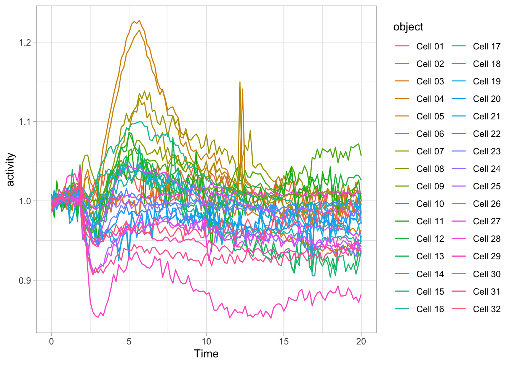
3.2 Discrete conditions
First, we load a dataset that has intensity measurements for 5 different conditions. For each conditions there are three measurements. This would be a typical outcome of the quantification of a western blot for N=3:
df <- read.csv('Low_n_tidy.csv')
head(df) Condition Intensity
1 A 1.0
2 B 10.3
3 C 5.5
4 D 4.5
5 E 2.3
6 A 1.1The basic function to plot the data is ggplot(). We supply the name of the dataframe and we define how to ‘map’ the data onto the x- and y-axis. For instance, we can plot the different conditions on the x-axis and show the size measurements on the y-axis:
ggplot(data=df, mapping = aes(x=Condition, y=Intensity))This defines the canvas, but does not plot any data yet. To plot the data, we need to define how it will be plotted. We can choose to plot it as dots with the function geom_point():
ggplot(data=df, mapping = aes(x=Condition, y=Intensity)) + geom_point()Within geom_point() we can specify the looks of the dot. For instance, we can change its color, shape and size:
ggplot(data=df, mapping = aes(x=Condition, y=Intensity)) + geom_point(color="blue", shape=18 ,size=8)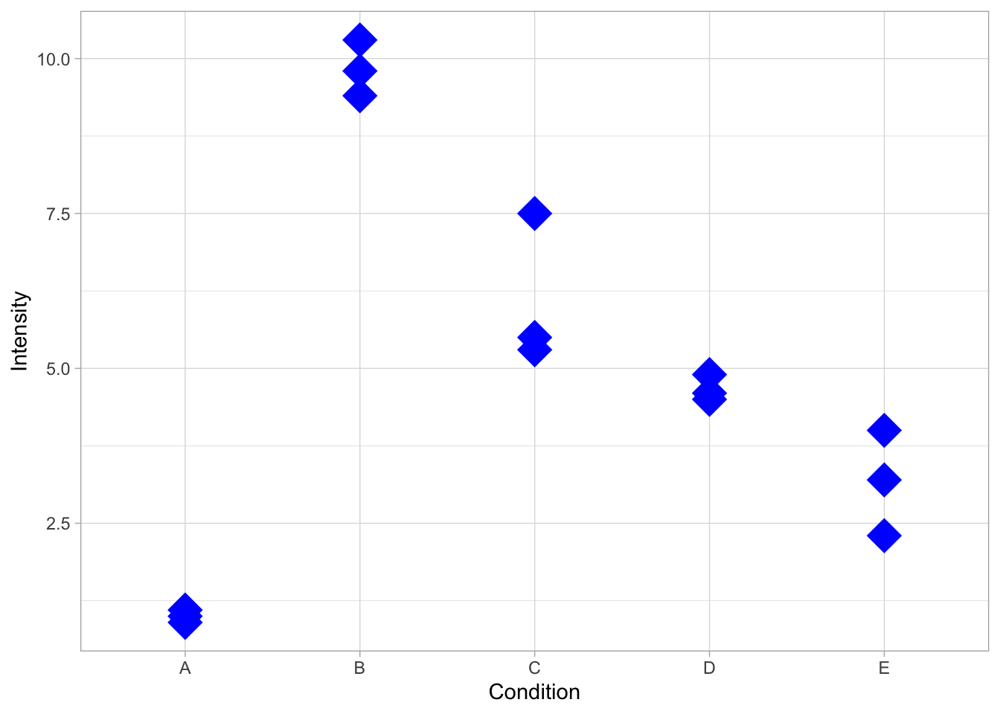
One of the issues with data that has low N, is that it may not look ‘impressive’, in the sense that there is lots of empty space on the canvas. This may be a reason to resort to bar graphs. However, bar graphs only show averages, which hinders transparent communication of results (https://doi.org/10.1371/journal.pbio.1002128). In situations where a bar graph is added, it has to be defined in the first layer to not overlap with the datapoints:
ggplot(data=df, mapping = aes(x=Condition, y=Intensity)) + geom_bar(stat = "summary", fun = "mean") + geom_point(size=4)In the default setting, there’s too much emphasis on the bar. This can be changed by formatting the looks of the bars, i.e. by changing the fill color, and the width:
ggplot(data=df, mapping = aes(x=Condition, y=Intensity)) + geom_bar(stat = "summary", fun = "mean", fill="grey80", width=0.7) + geom_point(size=4)The overlap of the dots can be reduced by introducing ‘jitter’ which displays the dots with a random offset. Note that the extent of the offset can be controlled and should not exceed the width of the bar. Another way to improve the visibility of overlapping dots is to make the dots transparant. This is controlled by ‘alpha’, which should be a number between 0 (fully transarent, invisible) and 1 (not transparant). In the graph below, both jitter and transparancy are used.
ggplot(data=df, mapping = aes(x=Condition, y=Intensity)) + geom_bar(stat = "summary", fun = "mean", fill="grey80", width=0.7) + geom_jitter(size=4, width=0.2, alpha=0.7)The jitter is applied randomly. To make a plot with reproducible jitter, one can fix the seed that is used for randomization by providing set.seed() with a number of choice, which fixes the randomness:
set.seed(1)
ggplot(data=df, mapping = aes(x=Condition, y=Intensity)) + geom_bar(stat = "summary", fun = "mean", fill="grey80", width=0.7) + geom_jitter(size=4, width=0.2, alpha=0.7)In the plot above, the length of the bar reflects the average value. This is only true when the bar starts from 0. Situations in which the length of the bar does not accurately reflect the number are: - using a linear scale that does not include zero - cutting the axis - using a logarithmic scale, which (per definition) does not include zero.
An example is shown below, where the logarithmic scale and limites are defined in by the scale_y_log10() function. Due to the non-linear scale, the length of the bar is not proportional to the value (the average) it reflects. This leads to misinterpretation of the data.
ggplot(data=df, mapping = aes(x=Condition, y=Intensity)) + geom_bar(stat = "summary", fun = "mean", fill="grey80", width=0.7) + geom_jitter(size=4, width=0.2, alpha=0.7) + scale_y_log10(limits=c(.5,12)) 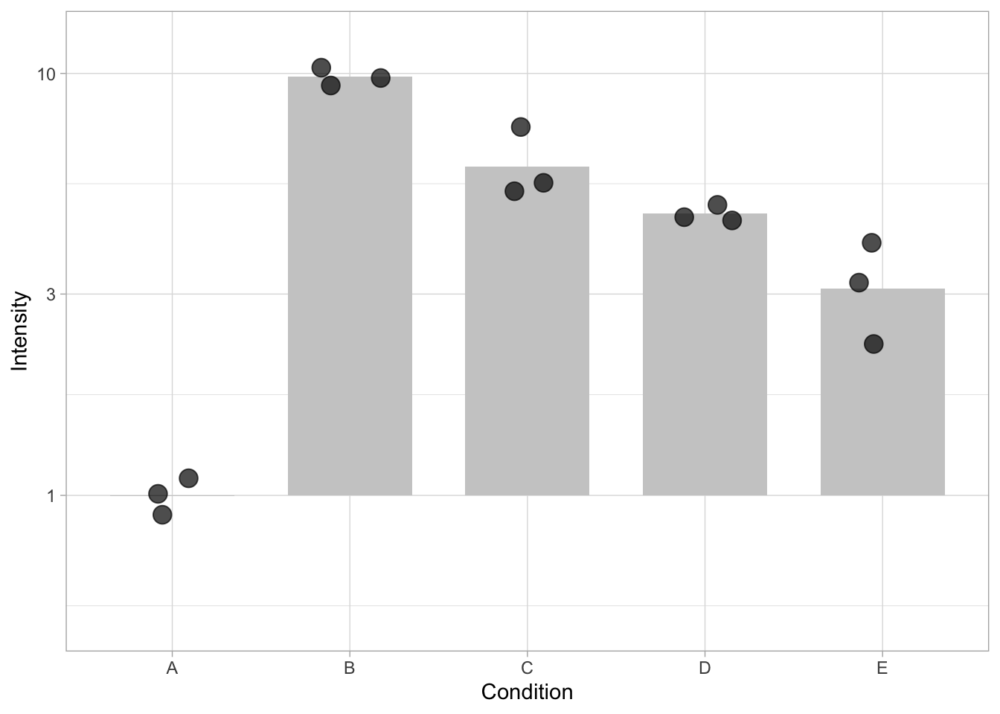
3.2.1 X-axis data: qualitative versus quantitative data
Suppose that the data comes from an experiment in which the data are measured at different time points. First we define a vector that defines the timepoints: e.g. 0, 1, 2, 5, 10:
t <- c(0,1,2,5,10)We need to repeat these timepoints three times, once for each replicate:
t3 <- rep(t,3)Now we can add the vector to the dataframe:
df <- df %>% mutate(Time=t3)And plot the activity for the different time points:
ggplot(data=df, mapping = aes(x=Time, y=Intensity)) + geom_bar(stat = "summary", fun = "mean", fill="grey80", width=0.7) + geom_jitter(size=4, width=0.2, alpha=0.7)This graph looks different because we it has numbers on the x-axis. The numbers are treated as ‘continuous quantitative data’ and the data is positioned according to the values. To treat the numbers as conditions or labels we need to convert them to qualitative data. This class of data is called factors in R. We can verify the class of data by selecting the column using the class() function. Here we select the third column of the dataframe to check its class:
class(df[,3])[1] "numeric"Now we convert the column ‘Time’ to the class factor:
df <- df %>% mutate(Time=as.factor(Time))Let’s verify that the class is changed:
class(df[,3])[1] "factor"We use the same line of code to plot the data, and the graph will look similar to the graph that used the conditions indicated with letters.
ggplot(data=df, mapping = aes(x=Time, y=Intensity)) + geom_bar(stat = "summary", fun = "mean", fill="grey80", width=0.7) + geom_jitter(size=4, width=0.2, alpha=0.7)Whether you treat the numbers on the x-axis as labels or values determines on the data and the message that you want to convey. If it is important to know when the highest activity occurs, it may not matter that the points are not equidistant (as in this example). In fact the data in the plot may better align with the lanes of a blot (which are also equidistant) from which the data are quantified . On the other hand, if you are interested in the dynamics of the activity, the timepoints on the x-axis should reflect the actual values to enable proper interpretation.
3.3 Statistics
3.3.1 Introduction
Thus far, we were mainly concerned with plotting the data. But plots with scientific data often feature some kind of statistics. Next to the mean or median, error bars are used to summarize variability or to reflect the uncertainty of the measurement.
Intermezzo: Descriptive vs Inferential Statistics It is a good idea to reflect on the reason to display statistics and it is essential to understand that you can choose between descriptive and inferential statistics. The descriptive statistics are used to summarize the data. Examples of descriptive statistics are the mean, median and standard deviation. Boxplots also display descriptive statistics. Inferential statistics are used to make ‘inferences’ or, in other words, generalize the data that are measured to the population it was sampled from. It is used to compare experiments and make predictions. Examples of inferential statistics are standard error of the mean and confidence intervals.
There are (at least) two ways to overlay statistics in a plot. The first way is demonstrated in the previous section, where a layer with the statistics (bar) was directly added to the plot. Below, we take this strategy a step further to display the standard deviation.
3.3.2 Data summaries directly added as a plot layer
In the code below the stat_summary() defines a layer with statistics. The fun=mean statement indicates that the function mean() should be applied to every condition on the x-axis:
ggplot(data=df, mapping = aes(x=Time, y=Intensity)) +
geom_jitter(size=4, width=0.2, alpha=0.7) +
stat_summary(fun = mean, geom='point', size=8, color='blue')This is pretty ugly and it is more common to indicate the mean (or median) with a horizontal line. This can be done by specifying the shape of the point:
ggplot(data=df, mapping = aes(x=Time, y=Intensity)) +
geom_jitter(size=4, width=0.2, alpha=0.7) +
stat_summary(fun = mean, geom='point', shape=95, size=24, color='black')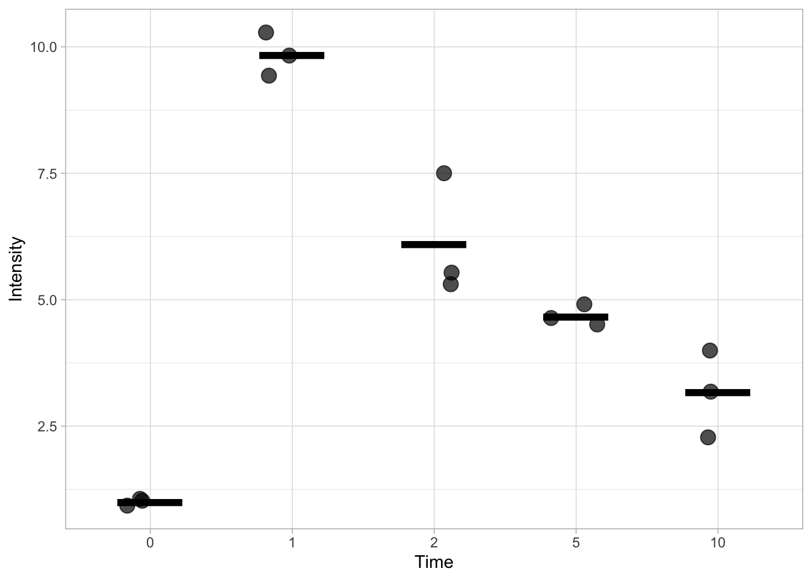
This works, but it doesn’t allow us to specify the width and the thickness of the line. To have better control over the line we turn to another ‘geom’, geom_errorbar(). This function is actually used to display errorbars, but if we only set one value for the min and max, it allows us to display the mean. We can change the looks of the horizontal bar by changing the width and the size. The latter defines the thickness of the line.
ggplot(data=df, mapping = aes(x=Time, y=Intensity)) +
geom_jitter(size=4, width=0.2, alpha=0.7) +
stat_summary(fun.min=mean, fun.max=mean, geom='errorbar', width=0.6, size =1)We can also indicate the standard deviation (SD), but we need to define a custom function to calculate the position of the upper and lower limit of the errorbar. That is, we need to display mean+SD and mean-SD for each condition. The code for the function that defines the lower limit is: function(y) {mean(y)-sd(y)} and for the upper limit it is: function(y) {mean(y)+sd(y)}
Here we go (note that the width is set to a smaller value):
ggplot(data=df, mapping = aes(x=Time, y=Intensity)) +
geom_jitter(size=4, width=0.2, alpha=0.7) +
stat_summary(fun.min=function(y) {mean(y) - sd(y)}, fun.max=function(y) {mean(y) + sd(y)}, geom='errorbar', width=0.3, size =1) By combing the layers that define the mean and de sd, we can show both:
ggplot(data=df, mapping = aes(x=Time, y=Intensity)) +
geom_jitter(size=4, width=0.2, alpha=0.7) +
stat_summary(fun.min=function(y) {mean(y) - sd(y)}, fun.max=function(y) {mean(y) + sd(y)}, geom='errorbar', width=0.3, size =1) +
stat_summary(fun.min=mean, fun.max=mean, geom='errorbar', width=0.6, size =1)Finally, an example that displays the 95% confidence intervals:
ggplot(data=df, mapping = aes(x=Time, y=Intensity)) +
geom_jitter(size=4, width=0.2, alpha=0.7) +
stat_summary(fun.min=function(y) {mean(y) - qt((1-0.95)/2, length(y) - 1) * sd(y) / sqrt(length(y) - 1)}, fun.max=function(y) {mean(y) + qt((1-0.95)/2, length(y) - 1) * sd(y) / sqrt(length(y) - 1)}, geom='errorbar', width=0.3, size =1) +
stat_summary(fun.min=mean, fun.max=mean, geom='errorbar', width=0.6, size =1)This method works, but the code to generate this graph is pretty long and the definition of the function make it difficult to follow and understand what’s going on. In addition, the values for the statistics are not accessible. To solve these issue, I will demonstrate below a more intuitive way to calculate and display the statistics.
3.3.3 Data summaries from a dataframe
We start out from the same data and dataframe. First, we calculate the statistics and assign the values to a new dataframe. To this end, we use the summarise() function for each condition (Time in this dataset) which we indicate by the use of group_by():
df_summary <- df %>% group_by(Time) %>% summarise(n=n(), mean=mean(Intensity), sd=sd(Intensity))
head(df_summary)# A tibble: 5 × 4
Time n mean sd
<fct> <int> <dbl> <dbl>
1 0 3 1 0.1
2 1 3 9.83 0.451
3 2 3 6.1 1.22
4 5 3 4.67 0.208
5 10 3 3.17 0.850This new dataframe can be used as source for displaying the statistics. Note that we need to indicate the df_summary dataframe for each layer:
ggplot(data = df) +
geom_jitter(aes(x=Time, y=Intensity),size=4, width=0.2, alpha=0.7) +
geom_errorbar(data=df_summary, aes(x=Time,ymin=(mean-sd), ymax=(mean+sd)), width=0.3, size =1) +
geom_errorbar(data=df_summary, aes(x=Time,ymin=(mean), ymax=(mean)), width=0.6, size =1) How about other stats? If we calculate other stats like sem, MAD and confidence intervals and store those in a dataframe, we can retrieve those for plotting as well. Below the code for the calculation of the most common statistics is presented. There is no function to calculare sem or the confidence interval and so we calulate those using mutate(). The confidence levels is set to 95%:
Confidence_level = 0.95
df_summary <- df %>%
group_by(Time) %>%
summarise(n=n(), mean=mean(Intensity), median=median(Intensity), sd=sd(Intensity)) %>%
mutate(sem=sd/sqrt(n-1),
mean_CI_lo = mean + qt((1-Confidence_level)/2, n - 1) * sem,
mean_CI_hi = mean - qt((1-Confidence_level)/2, n - 1) * sem
)
head(df_summary)# A tibble: 5 × 8
Time n mean median sd sem mean_CI_lo mean_CI_hi
<fct> <int> <dbl> <dbl> <dbl> <dbl> <dbl> <dbl>
1 0 3 1 1 0.1 0.0707 0.696 1.30
2 1 3 9.83 9.8 0.451 0.319 8.46 11.2
3 2 3 6.1 5.5 1.22 0.860 2.40 9.80
4 5 3 4.67 4.6 0.208 0.147 4.03 5.3
5 10 3 3.17 3.2 0.850 0.601 0.579 5.75In principle the code for plotting the error bars that reflect the standard deviations (or sem) can be simplified if the upper and lower limit are calculated, similar to the example shown above for the 95% confidence intervals.
3.3.4 Data summaries for continuous x-axis data
Let’s revisit the data from the time-course of Rho GTPase activity that we’ve looked at earlier:
df_tidy <- read.csv("df_S1P_combined_tidy.csv")
df_Rho <- df_tidy %>% filter(Condition == 'Rho') %>% filter(!is.na(activity))Calculate the statistics for each time point:
df_summary <- df_Rho %>% group_by(Time) %>%
summarise(n=n(), mean=mean(activity), median=median(activity), sd=sd(activity)) %>%
mutate(sem=sd/sqrt(n-1),
mean_CI_lo = mean + qt((1-Confidence_level)/2, n - 1) * sem,
mean_CI_hi = mean - qt((1-Confidence_level)/2, n - 1) * sem
)
head(df_summary)# A tibble: 6 × 8
Time n mean median sd sem mean_CI_lo mean_CI_hi
<dbl> <int> <dbl> <dbl> <dbl> <dbl> <dbl> <dbl>
1 0 12 0.998 0.997 0.00477 0.00144 0.995 1.00
2 0.167 12 1.00 1.00 0.00615 0.00186 0.999 1.01
3 0.333 12 0.998 0.998 0.00260 0.000783 0.996 1.00
4 0.5 12 0.999 0.998 0.00657 0.00198 0.995 1.00
5 0.667 12 1.00 1.00 0.00703 0.00212 0.998 1.01
6 0.833 12 1.00 1.00 0.00741 0.00223 0.998 1.01With this data summary it is possible to depict the 95% confidence interval as error bars:
ggplot(data = df_Rho) +
geom_line(aes(x=Time, y=activity, color=object),size=1, alpha=0.7) +
geom_errorbar(data=df_summary, aes(x=Time,ymin=mean_CI_lo, ymax=(mean_CI_hi)), width=0.3, size=1, alpha=0.7)It works, but it is also quite messy. Luckily ggplot has a more elegant solution and that’s geom_ribbon():
ggplot(data = df_Rho) +
geom_line(aes(x=Time, y=activity, group=object),size=.5, alpha=0.4) +
geom_ribbon(data=df_summary, aes(x=Time,ymin=mean_CI_lo, ymax=(mean_CI_hi)), fill='blue', alpha=0.3)Note that I also removed the color of the individual lines, as it is more about the ensemble and it’s average than the individual line. Adding a line to reflect the average is pretty straightforward:
ggplot(data = df_Rho) +
geom_line(aes(x=Time, y=activity, group=object),size=.5, alpha=0.4) +
geom_ribbon(data=df_summary, aes(x=Time,ymin=mean_CI_lo, ymax=(mean_CI_hi)), fill='blue', alpha=0.3) +
geom_line(data=df_summary, aes(x=Time,y=mean), color='blue', size=2, alpha=0.8)3.4 Plot-a-lot - discrete data
Other data summaries that are often depicted in plots are boxplots and violinplots. These are not suited for data with low n, as in the previous example. The reason is that the boxplot is defined by five values, i.e. the median (the central line), the interquartile range, IQR (the two limits of the box) and the endpoints of the two lines, also known as whiskers. It makes no sense to use a boxplot for n=5, since it does not add any new information. There is no hard cut-off, but in my opinion boxplots make sense when you have 10 or more datapoints per condition.
Although the boxplot is a good data summary for normally distributed and skewed data distributions, it doesn’t capture the underlying distribution well when it is bi- or multimodal. In these cases, a violin plot is better suited.
The box- and violinplot are easily added as a layer as they are defined by specific functions, geom_boxplot() and geom_violin().
First, let’s load a dataset with larger n. The function summary() provides a quick overview of the data:
df <- read.csv('Area_tidy.csv')
summary(df) Condition value
Length:283 Min. : 477.2
Class :character 1st Qu.:1152.1
Mode :character Median :1490.9
Mean :1567.8
3rd Qu.:1838.1
Max. :3906.7 There are three conditions, with relative large n. Let’s plot the data:
ggplot(df, aes(x=Condition, y=value)) + geom_jitter(width=0.2, alpha=0.5)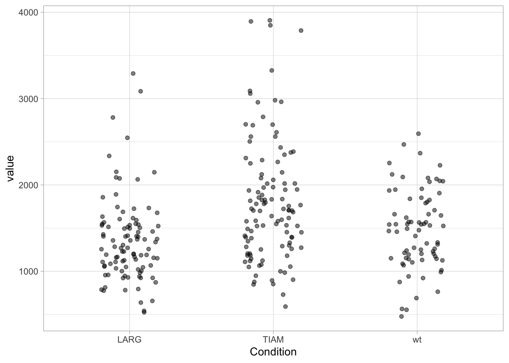
Adding a boxplot:
ggplot(df, aes(x=Condition, y=value)) + geom_jitter(width=0.2, alpha=0.5) + geom_boxplot()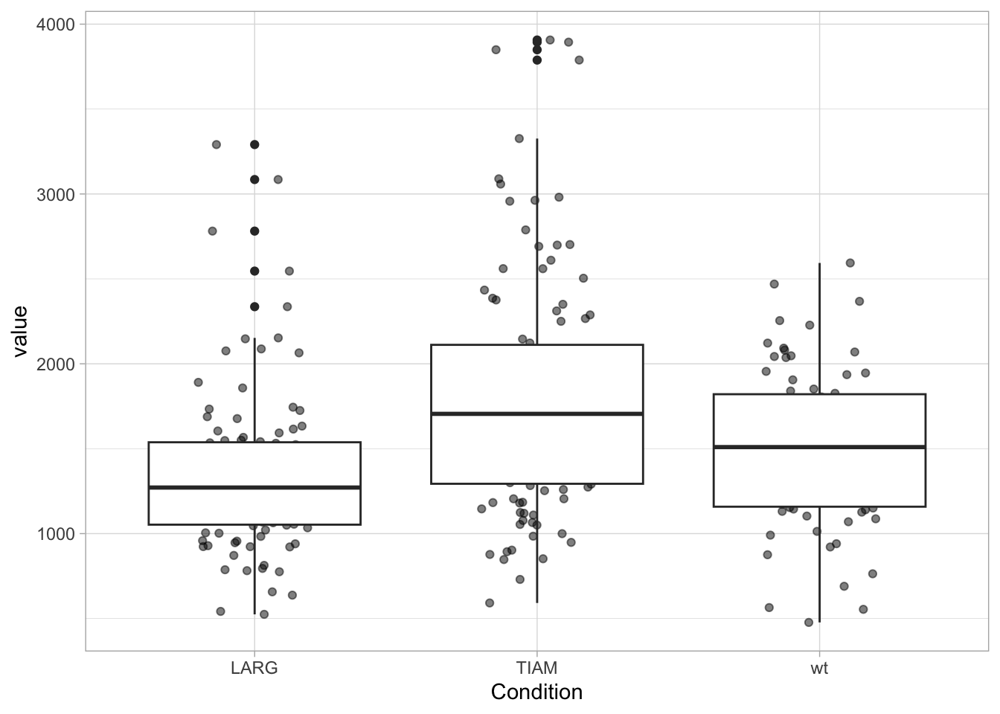
The geom_boxplot displays outliers (data beyond the whiskers). This is clear when only the boxplot is shown:
ggplot(df, aes(x=Condition, y=value)) + geom_boxplot()
When the data is displayed together with the boxplot, the outliers need to be removed to avoid duplication. And to make sure that the data is visibel and not hidden by the boxplot, we can either change the order of the layers or remove the white color that is used to fill the box:
ggplot(df, aes(x=Condition, y=value)) +
geom_jitter(width=0.2, alpha=0.5) +
geom_boxplot(fill=NA, outlier.color = NA)In case a boxplot is used as summary, it may be useful to have the values of Q1, Q3 and the interquartile range. The code shown below can be used to calculate all these paramters and also includes the median absolute deviation (MAD) as a robust measure of variability:
Confidence_level = 0.95
df_summary <- df %>%
group_by(Condition) %>%
summarise(n=n(), mean=mean(value), median=median(value), sd=sd(value),
MAD=mad(value, constant=1),
IQR=IQR(value),
Q1=quantile(value, probs=0.25),
Q3=quantile(value, probs=0.75))
df_summary# A tibble: 3 × 9
Condition n mean median sd MAD IQR Q1 Q3
<chr> <int> <dbl> <dbl> <dbl> <dbl> <dbl> <dbl> <dbl>
1 LARG 99 1361. 1271. 486. 250. 485. 1053. 1538.
2 TIAM 110 1808. 1705. 704. 416. 818. 1293. 2112.
3 wt 74 1487. 1509. 459. 333. 662. 1158. 1821.Display of a violinplot in addition to the data:
ggplot(df, aes(x=Condition, y=value)) +
geom_violin() +
geom_jitter(width=0.2, alpha=0.5)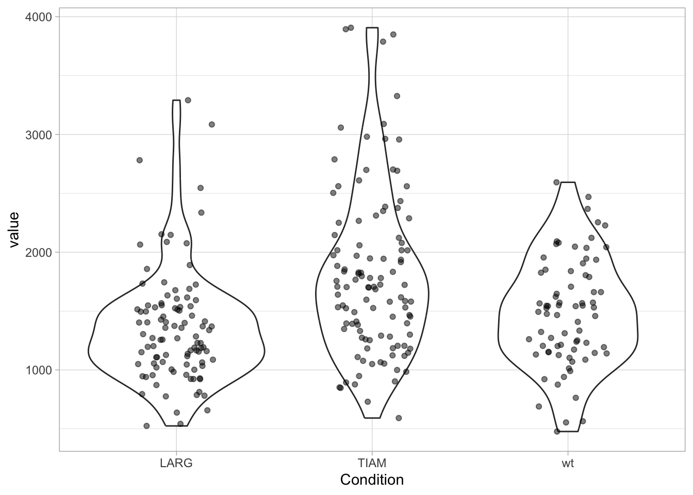
Personally, I like the combination of data and violinplot, but the jitter can make the plot look messy. There are packages that enable the plotting of the data according to its distribution. There is geom_sina() from the {ggforce} package and geom_quasirandom() from the {ggbeeswarm} package:
library(ggbeeswarm)
ggplot(df, aes(x=Condition, y=value)) +
geom_violin() +
geom_quasirandom(width=0.3, alpha=0.5)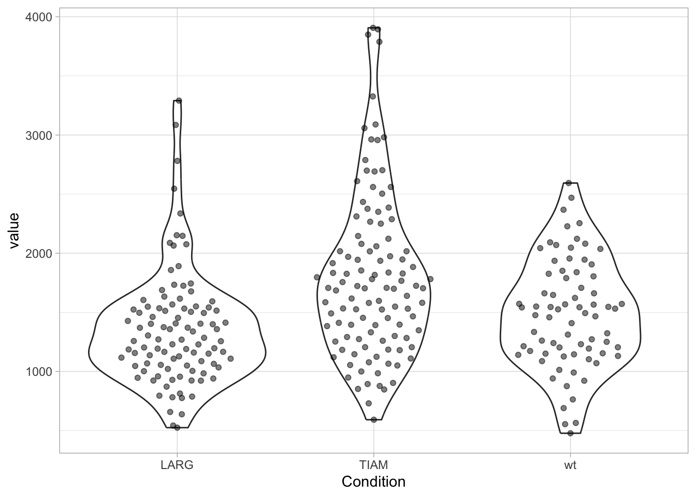
Sometimes, you find examples of boxplots overlayed on violin plots, like this (and note that we have filled the violins with a unique color for each condition):
ggplot(df, aes(x=Condition, y=value)) +
geom_violin(aes(fill=Condition), alpha=0.5) +
geom_boxplot(width=0.1, outlier.color = NA)Note that geom_quasirandom() can generate plots with excessive overlap between data points when there’s large amounts of data. In some cases this can be solved by increasing the transparency (by decreasing alpha). Another option is to use geom_beeswarm(), which does not allow overlap of the points. I have a preference for showing the actual data, but for large n the violinplot may better convey the message of the data than a cluttered plot that shows a lot of dots.
3.5 Optimizing the data visualization
3.5.1 Rotation
Rotating a plot by 90 degrees can be surprisingly effective. Especially when the labels that are used for the x-axis are so long that they need to be rotated, it is better to rotate the plot. This improves the readability of the numbers and labels on both the x- and y-axis and avoids the need of tilting your head.
library(ggbeeswarm)
ggplot(df, aes(x=Condition, y=value)) +
geom_boxplot(outlier.colour = NA) +
geom_quasirandom(width=0.3, alpha=0.5) +
coord_flip()An example of how to further tweak a 90˚ rotated plots is given in Protocol 2
3.5.2 Ordering conditions
The order of the conditions used for the x-axis (for discrete conditions) is numeric and alphabetic. In case of a large number of conditions, it can help to sort these according to the median or mean value. This requires another order of the factors. To check the order of the factors in the dataframe we use:
levels(df$Condition)NULLNow, we change the order, sorting the factors according to the median of “value” and we verify the order:
df <- df %>% mutate(Condition = fct_reorder(Condition, value, .fun='median'))
levels(df$Condition)[1] "LARG" "wt" "TIAM"Let’s plot the data:
ggplot(df, aes(x=Condition, y=value)) +
geom_boxplot(outlier.colour = NA) +
geom_quasirandom(width=0.3, alpha=0.5)The factors on the x-axis are now sorted according to the median of value. It is also possible to manually set the sequence, in this example the order is set to wt, LARG, TIAM:
df <- df %>% mutate(Condition = fct_relevel(Condition, c("LARG", "TIAM", "wt")))
ggplot(df, aes(x=Condition, y=value)) +
geom_boxplot(outlier.colour = NA) +
geom_quasirandom(width=0.3, alpha=0.5)In the examples above, we have modified the dataframe, since we used mutate() to change the order. To set the order for plotting without altering the dataframe we can define the reordering within ggplot:
ggplot(df, aes(x=fct_reorder(Condition, value, .fun='median'), y=value)) +
geom_boxplot(outlier.colour = NA) +
geom_quasirandom(width=0.3, alpha=0.5)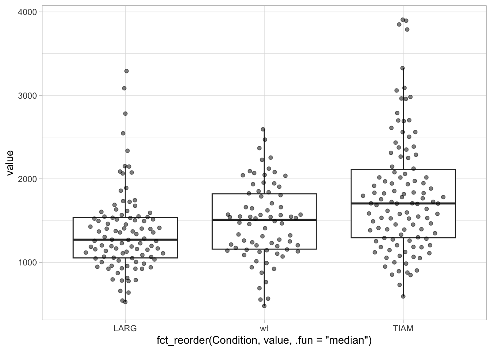
Alternatively, we can use the pipe operator to feed the data in the reordering function and then use the reordered dataframe for plotting:
df %>% mutate(Condition = fct_reorder(Condition, value, .fun='median')) %>%
ggplot(aes(x=Condition, y=value)) +
geom_boxplot(outlier.colour = NA) +
geom_quasirandom(width=0.3, alpha=0.5)
We can check that the order of the levels in the dataframe has not changed and differs from the order in the plot:
levels(df$Condition)[1] "LARG" "TIAM" "wt" 3.6 Adjusting the layout
Details matter, also in data visualization. Editing labels, adding titles or annotating data can make the difference between a poor and a clear data visualization. Although it can be quicker and easier to edit a plot with software that deals with vectors, it is not reproducible. And when you need to change the graph, the editing starts all over again. Luckily, with ggplot2, you have full control over every element.
A lot of elements are controlled by the function theme(), and examples are the label size and color, the grid, the legend style and the color of the plot elements. This level of control offers great power, but it can be quite daunting (and non-intuitive) for new users. We discuss a couple of straightforward manipulations of the theme below. More detailed modifications of the layout will be showcased in the chapter with Complete Protocols.
3.6.1 Themes
Let’s look at a violinplot and we plot it with the default theme, which has a grey background:
p <- ggplot(df, aes(x=Condition, y=value)) +
geom_violin(aes(fill=Condition), alpha=0.5) +
geom_boxplot(width=0.1, outlier.color = NA) +
theme_grey()
pThe default theme is OK-ish and we can change it to one of the other themes that are available in the ggplot2 package, for instance theme_classic():
p + theme_classic()The ggplot2 package has a default dark theme, but that only generate a dark background in the plot area. I made a customized theme theme_darker() for plots on dark background, e.g. black slides. It needs to be loaded with the source() function and then it can be applied:
source("https://raw.githubusercontent.com/JoachimGoedhart/PlotTwist/master/themes.R")
p + theme_darker()Finally, we can modify the text size of all text elements:
p + theme_bw(base_size = 16)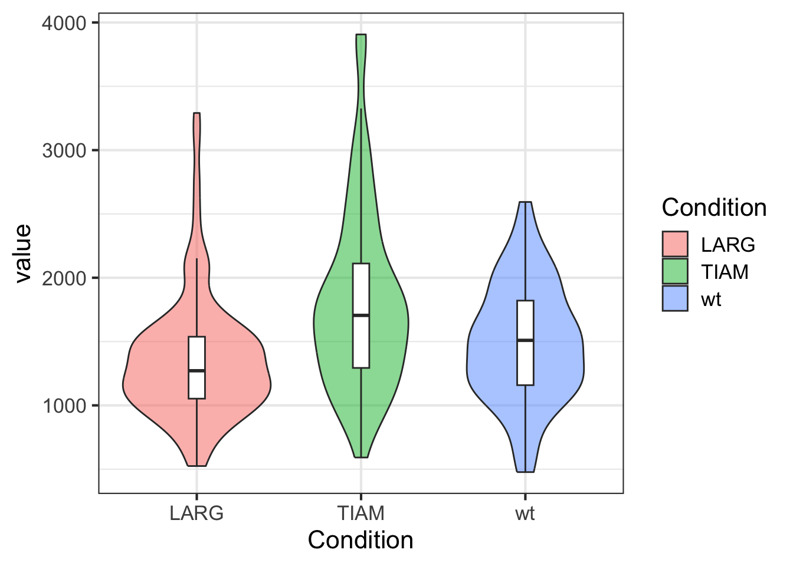
To reset the theme to the default that is used throughout the book:
p <- p + theme_light()3.6.2 Legend
The legend can be controlled through the theme() function. Legends are automatically created when different colors or shapes are used. One example is the plot below, where different conditions are shown in different colors. To change the style, we define the plot object p:
To remove the legend we use:
p + theme(legend.position = "none")Other options are “top”, “left”, “bottom” and (the default) “right”. The items of the legend can also be displayed horizontally, which is a nice fit when the legend is shown on top of the plot:
p + theme(legend.position = "top", legend.direction = "horizontal")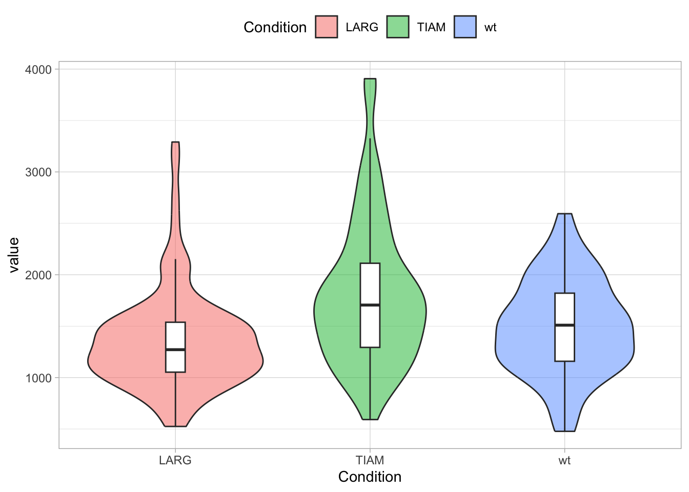
To left align the legend:
p + theme(legend.position = "top", legend.direction = "horizontal", legend.justification='left')3.6.3 Grids
I am not a big fan of grids, so I often remove it:
p + theme(panel.grid = element_blank())To only remove the vertical grid and make the horizontal grid more pronounced:
p + theme(panel.grid.major.x = element_blank(),
panel.grid.major.y = element_line(size=0.5, color='grey30'),
panel.grid.minor.y = element_line(size=0.2, color='grey30')
)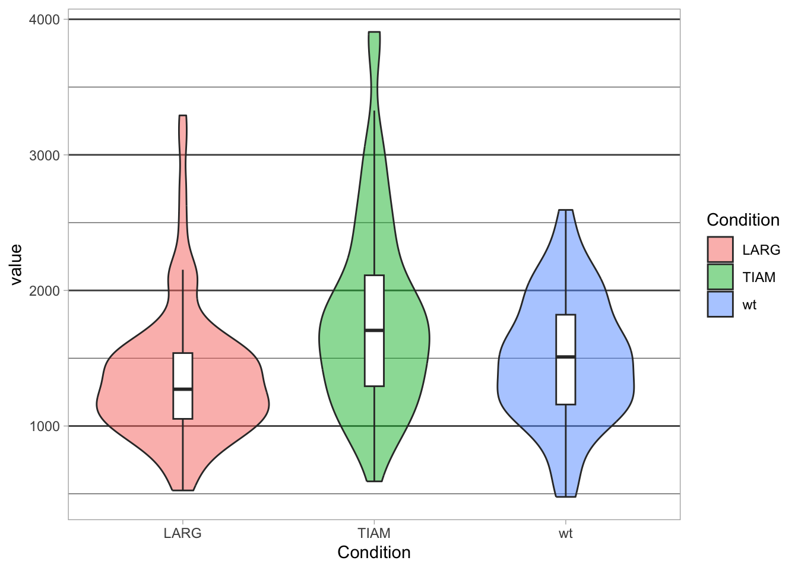
3.6.4 Labels/Titles
Clear labeling aids the interpretation of the plot. The actual labels and titles are changed or added with the function labs() and their style is controled with the theme() function.
Let’s first look at the labels. The titles of the axes and legend are retrieved from the column names in the dataframe. To adjust the axis labels with labs():
p + labs(x='Perturbation', y='Area [µm]')Note that the title of the legend is not changed. To change the legend title we need to supply a label for ‘fill’, since the legend in this example indicates the color that was used to ‘fill’ the violin plots:
p + labs(x='Perturbation', y='Area [µm]', fill='Perturbation:')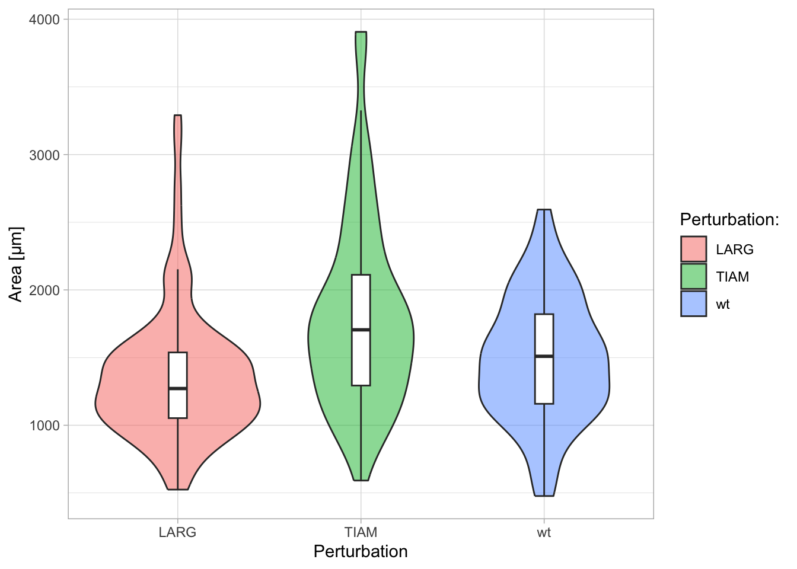
A title, subtitle and caption can also be added with labs():
p + labs(x='Condition',
y='Area [µm]',
title='This is the title...',
subtitle='...and this is the subtitle',
caption='A caption is text at the bottom of the plot')The style of the different labels can be set with theme():
p + labs(x='Condition',
y='Area [µm]',
title='This is the title...',
subtitle='...and this is the subtitle',
caption='A caption is text at the bottom of the plot') +
theme(axis.title.x = element_text(size=16, color='black'),
axis.title.y = element_text(size=16, color='black'),
axis.text = element_text(size=14, color='orange'),
plot.title = element_text(size=18, color='slateblue'),
plot.subtitle = element_text(size=12, color='slateblue', hjust = 1),
plot.caption = element_text(size=10, color='grey60', face = "italic")
)This is a demonstration of how the different pieces of text can be modified, not a template for a proper data visualization since it uses too many, unnecessary, colors!
3.7 Plot-a-lot - continuous data
It can be a challenge to look at individual data or samples instead of summaries when you have a large amount of data. I will illustrate a number of options based on the timeseries data of Rac activity, that we have seen before. This dataset is still quite simple, but given its heterogeneity it illustrates well how the data can be presented in such a way that all traces can be inspected.
df_Rac <- read.csv("df_S1P_combined_tidy.csv") %>% filter(Condition == 'Rac') %>% filter(!is.na(activity))
head(df_Rac) Condition Treatment Time object activity
1 Rac S1P 0 Cell 01 1.0012160
2 Rac S1P 0 Cell 02 1.0026460
3 Rac S1P 0 Cell 03 1.0022090
4 Rac S1P 0 Cell 04 0.9917870
5 Rac S1P 0 Cell 05 0.9935569
6 Rac S1P 0 Cell 06 0.9961453We have seen this data before, but let’s look at this again in an ordinary line plot:
ggplot(data=df_Rac, aes(x=Time, y=activity)) + geom_line(aes(color=object))
There is a lot to see here and it is a bit of mess. Clearly, there is variation, but it is difficult to connect a line, by its color to the cell it represents. Below, there are some suggestions how this data can be presented more clearly.
3.7.1 Small multiples
Small multiples remind me of a stamp collection, where every stamp is a (small) plot. This works very well to display lots of data. It is also pretty straightforward in ggplot2 with facet_wrap():
ggplot(data=df_Rac, aes(x=Time, y=activity)) +
geom_line() +
facet_wrap(~object)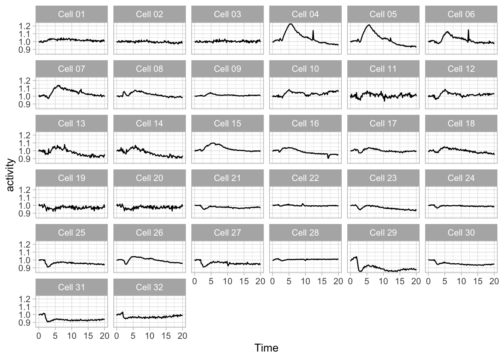
I got rid of color, since it would be redundant and the improved contrast of the black line helps to focus on the data.
The lay-out of the 32 mini plots can be improved by fixing the number of columns:
ggplot(data=df_Rac, aes(x=Time, y=activity)) +
geom_line() +
facet_wrap(~object, ncol = 8)Since the small multiple is at its best, when the data stands out and the text and other elements are minimized. Here is an extreme version of the plot to make that point:
ggplot(data=df_Rac, aes(x=Time, y=activity)) +
geom_line() +
facet_wrap(~object, ncol = 8) + theme_void()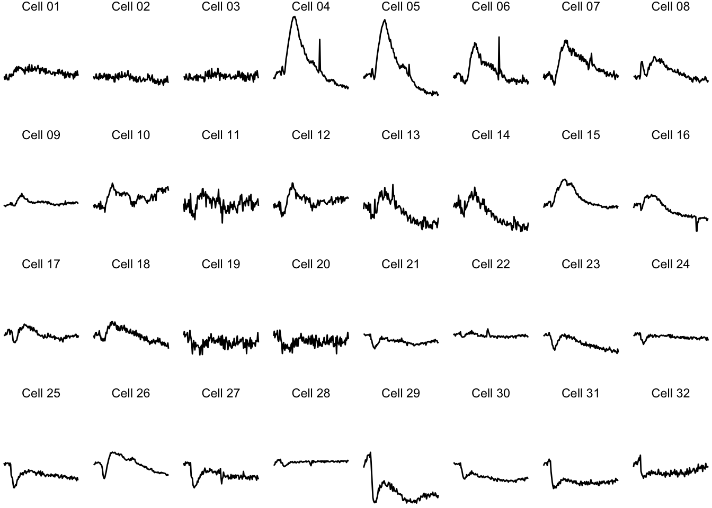
Further optimization of a small multiple plot is discussed in Protocol 3. For complex experimental designs, the data can split according to two different factors. This also uses a faceting strategy, with the facet_grid() function. This works well when the data has two discrete variables and the application of this function is demonstrated in Protocol 4.
3.7.2 Heatmaps
Heatmaps are well suited for dense data and have traditionally been used for microarray and other -omics data. Heatmaps can also be used for timeseries data. To do this, we (i) keep the x-axis as is, (ii) map the objects on the y-axis and (iii) specify that the color of the tile reflects activity:
ggplot(data=df_Rac, aes(x=Time, y=object)) +
geom_tile(aes(fill=activity))
The default colorscale is not ideal. I personally like the (colorblind friendly) viridis scale and this colorscale can be used to fill the tile with scale_fill_viridis_c().
To sort the data according to the object labels as they appear in the dataframe:
ggplot(data=df_Rac, aes(x=Time, y=object)) +
geom_tile(aes(fill=activity)) + scale_fill_viridis_c()To reverse the order of the objects we can use fct_rev():
ggplot(data=df_Rac, aes(x=Time, y=fct_rev(object))) +
geom_tile(aes(fill=activity)) + scale_fill_viridis_c()A heatmap does not need a grid and usually has no axes. Plus, when there are many objects, it makes sense to hide their names, ticks and the y-axis label:
p <- ggplot(data=df_Rac, aes(x=Time, y=fct_rev(object))) +
geom_tile(aes(fill=activity)) + scale_fill_viridis_c() +
theme(text = element_text(size=16),
# Remove borders
panel.border = element_blank(),
# Remove grid
panel.grid.major = element_blank(),
panel.grid.minor = element_blank(),
# Remove text of the y-axis
axis.text.y = element_blank(),
# Remove ticks on y-axis
axis.ticks.y = element_blank(),
# Remove label of y-axis
axis.title.y = element_blank(),
# Make x-axis ticks more pronounced
axis.ticks = element_line(colour = "black")
)
p
3.7.3 Custom objects
The use of titles, captions and legends will add infomration to the data visualization. Tweaking the theme will improve the style of the plot and give it the right layout. There’s another layer of attributes that are not discussed yet and these are custom objects and labels. These additions will help to tell the story, i.e. by explaining the experimental design.
Let’s look at the cellular response to stimulation with a ligand. The df_Rho dataframe that we have used earlier is used in this example and we plot the average and standard deviation:
p <- ggplot(data=df_Rho, aes(x=Time, y=activity)) +
stat_summary(fun = mean, geom='line', size=2) +
stat_summary(fun.min=function(y) {mean(y) - sd(y)},
fun.max=function(y) {mean(y) + sd(y)},
geom='ribbon', color='black', size =.1, alpha=0.2)
p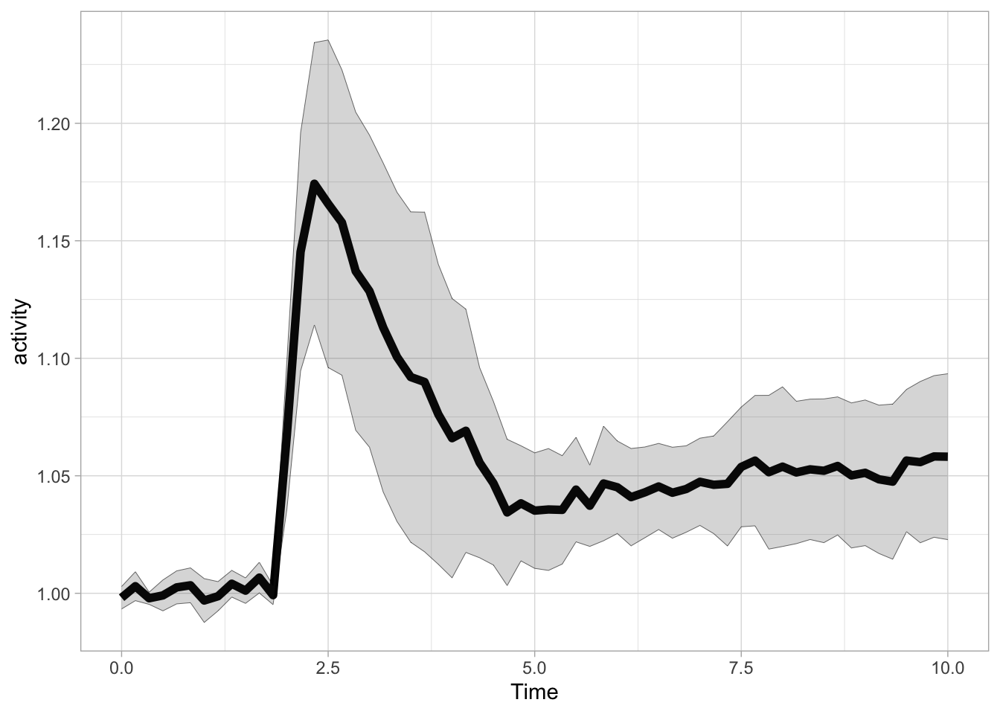
The ligand is added at t=1.75 and we can add a vertical line with geom_vline() to indicate this:
p + geom_vline(xintercept = 1.75, size=1, color="grey20")
More flexible labeling is provided with the annotate() function, which enables the addition of line segments, rectangles and text. First, let’s reproduce the the previous plot with this function, by defining a line segment. The line segment has two coordinates for the start and two for the end. The x position is 1.75 for both start and end. For the y-coordinate we can use Inf and -Inf to define the endpoints of the line. The use of Inf has two advantages. We do not need to define the exact points for the start and end and we prevent rescaling of the plot to show the segment:
p + annotate("segment", x = 1.75, xend = 1.75, y = -Inf, yend = Inf, size=1, color="grey20")In a similar way we can define a rectangle to highlight the time where the ligand was present (It is possible to use Inf for xmax here, in that case the blue rectangle would fill up the entire plot to the right). Since the rectangle is added as the last layer, it would occlude the data. That’s why a an alpha level of 0.1 is used to make the rectangle transparent:
p + annotate("rect", xmin = 1.75, xmax = 10, ymin = -Inf, ymax = Inf, fill="blue", alpha=0.1)We can also add an rectangle to the top of the graph:
p + annotate("rect", xmin = 1.75, xmax = 10, ymin = 1.26, ymax = 1.27, fill="black") +
annotate("text", x=5, y=1.29, label="ligand", size=6)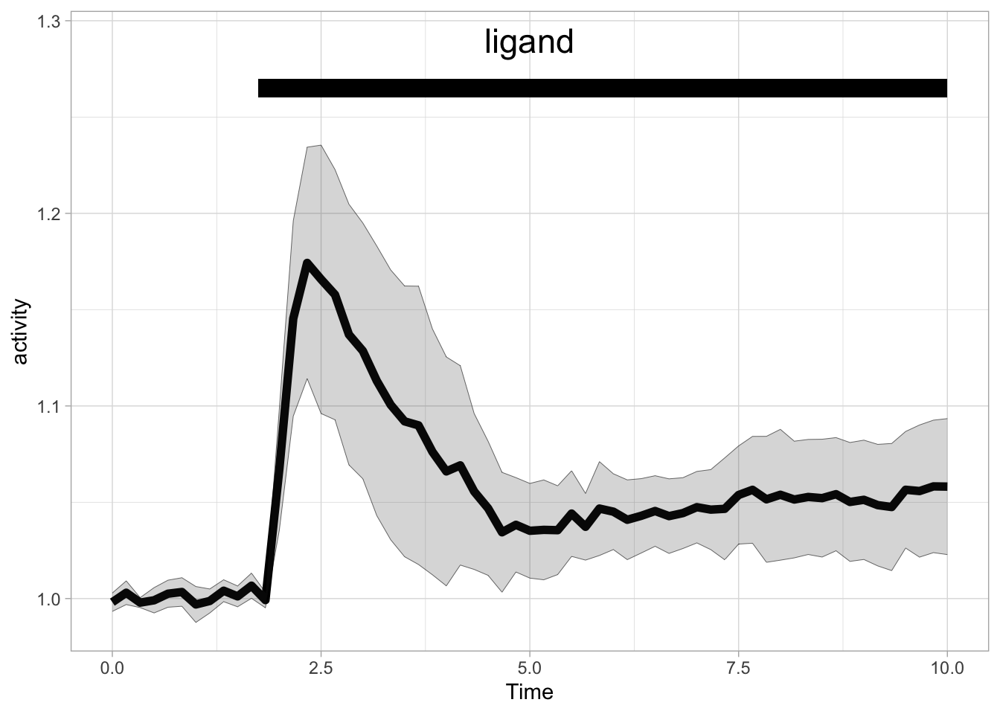
In the example above, the rectangle and text are added to the plot area and the y-axis is expanded. To move the annotation out of the plot area, we need to increase the white space above the plot with theme() and we can scale the plot with coord_cartesian():
p + annotate("rect", xmin = 1.75, xmax = 10, ymin = 1.25, ymax = 1.26, fill="black") +
annotate("text", x=5, y=1.28, label="ligand", size=6) +
coord_cartesian(ylim = c(0.98,1.23), clip = 'off') +
theme(plot.margin = margin(t = 50, r = 0, b = 0, l = 0, unit = "pt"))The annotation is part of the plot and would normally be invisible since everything outside the plot area is clipped. To show the annotation, clip = 'off' is needed in the code above. However, this may lead to undesired behavior when the scaling is set in such a way that the data falls outside the plot area. Although you could use it to create a dramatic ‘off-the-charts’ effect.
p + annotate("rect", xmin = 1.75, xmax = 10, ymin = 1.25, ymax = 1.26, fill="black") +
annotate("text", x=5, y=1.28, label="ligand", size=6) +
coord_cartesian(ylim = c(0.98,1.15), clip = 'off') +
theme(plot.margin = margin(t = 130, r = 0, b = 0, l = 0, unit = "pt"))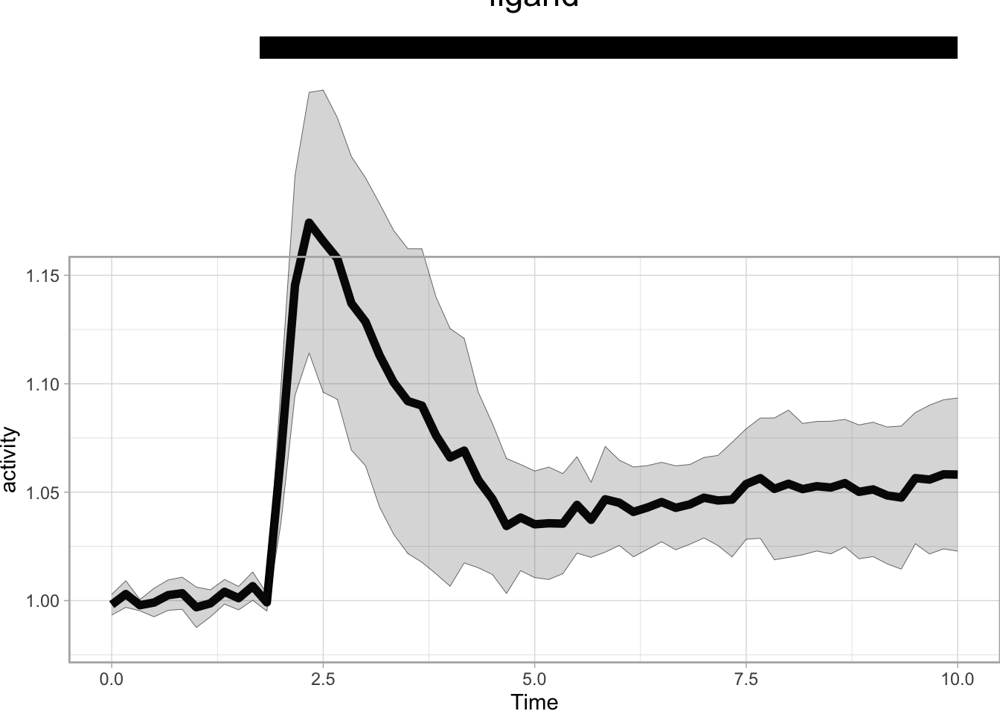
This concludes a couple examples of the annotate() function. Protocol 5 is a good example how these annotations can assist to build an informative data visualization.